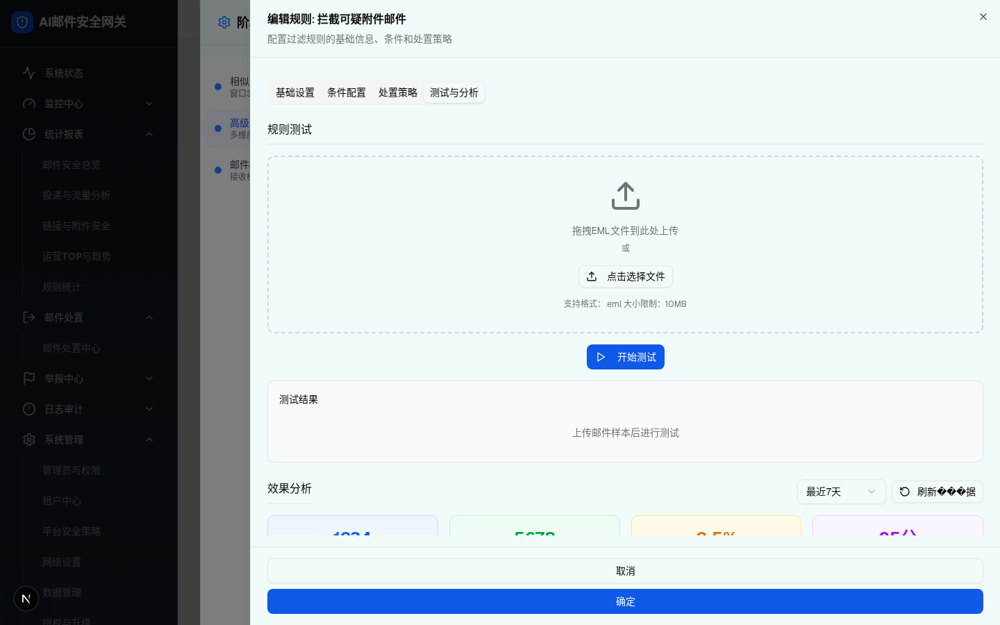
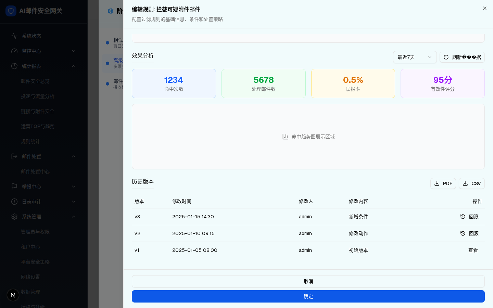

可交互组件预览
规则测试
⬆ 拖拽EML文件到此处
支持 .eml 格式，最大 10MB
demo 行为：占位交互——上传与测试无实际逻辑（主文件 §9 D-12，落地范围见 Q-10）
效果分析
1234
命中次数
5678
处理邮件数
0.5%
误报率
95分
有效性评分
📊 命中趋势图展示区域
demo 行为：时间范围仅切换选中值，四项指标为规则 statistics 静态值，趋势图为占位框（D-12）。「刷新数据」按钮文案在 demo 中含乱码「刷新��据」（D-6）
历史版本
| 版本 | 修改时间 | 修改人 | 修改内容 | 操作 |
|---|---|---|---|---|
| v3 | 2025-01-15 14:30 | admin | 新增条件 | |
| v2 | 2025-01-10 09:15 | admin | 修改动作 | |
| v1 | 2025-01-05 08:00 | admin | 初始版本 |
demo 行为：历史版本为静态 mock，回滚/查看/导出均无逻辑（D-12）

